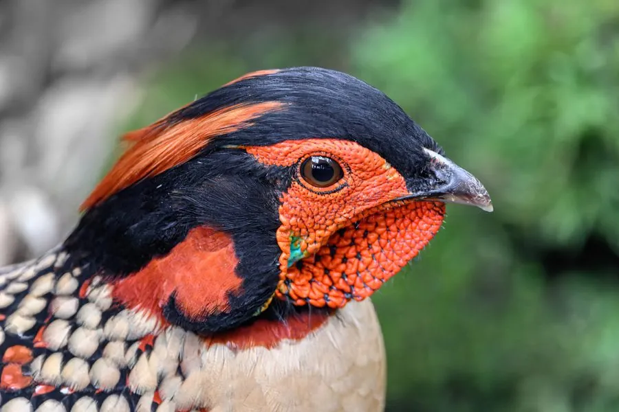

鸟类 · 动物界
黄腹角雉 Tragopan caboti

中国特有的珍稀雉类，雄鸟腹部金黄、头顶长着翠蓝色肉角，求偶时会展开色彩斑斓的肉裙，野外仅存数千只。
- 分类
- 门脊索动物门纲鸟纲目鸡形目科雉科属角雉属
- 栖息环境
- 海拔 600–1800 米的亚热带常绿阔叶林、针阔混交林与林下灌丛
- 地理分布
- 中国特有种，分布于浙江、福建、江西、湖南、广东、广西等地的山区
- 保护级别
- IUCN 易危（VU）；中国国家一级保护动物
物种志
黄腹角雉体长 50–65 cm，雄鸟体重约 1.2–1.5 kg，雌鸟略小。雄鸟头顶黑色并带橙红色斑纹，头顶两侧长着一对翠蓝色的肉质角，脸部裸露的皮肤呈橙黄色，体羽以棕褐色为主并密布白色斑点，腹部为醒目的金黄色；雌鸟通体灰褐色，满布细纹，与落叶背景十分接近。
黄腹角雉是中国特有鸟类，分布于浙江、福建、江西、湖南、广东、广西等地的山地森林，栖息在海拔 600–1800 米的亚热带常绿阔叶林、针阔混交林和林下灌丛。它们以植物嫩叶、果实、种子和昆虫为食，生性隐蔽，受惊时常就地伏卧不动。繁殖期雄鸟会充气竖起头顶的肉角，同时展开喉下的肉裙，跳起求偶舞；它们多在离地 3–5 m 的树上营巢，这在雉类中很少见，每窝产卵 3–4 枚，孵化约 28 天。由于栖息地破碎化和繁殖率低，黄腹角雉被列为易危物种和国家一级保护动物。
形态与习性
- 食性植物嫩叶、果实、种子和昆虫
- 体长雄鸟 58–65 cm，雌鸟 50–55 cm
- 体重约 1.2–1.5 kg
- 繁殖每窝 3–4 枚卵，孵化约 28 天
- 巢址多在树上 3–5 m 高处营巢，这在雉类中很少见
- 寿命野外约 10 年
- 肉角雄鸟头顶一对翠蓝色肉角，求偶时可充气竖起
趣味知识
- 求偶时雄鸟头顶的翠蓝色肉角会充气竖起，喉下的肉裙同时展开成艳丽图案。
- 黄腹角雉是中国特有鸟类，野外种群数量稀少，被列为国家一级保护动物。
- 多数雉类在地面筑巢，黄腹角雉却常把巢建在离地数米的树上。
- 它生性隐蔽，受惊时多就地伏卧不动，靠羽色与落叶背景融为一体。